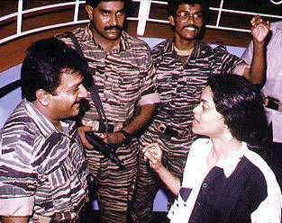
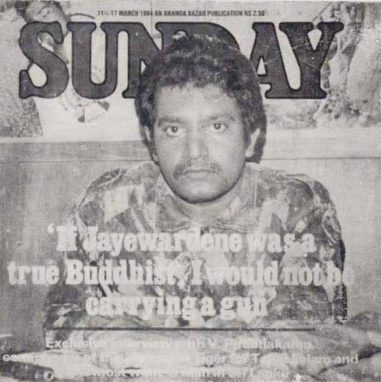
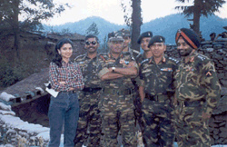
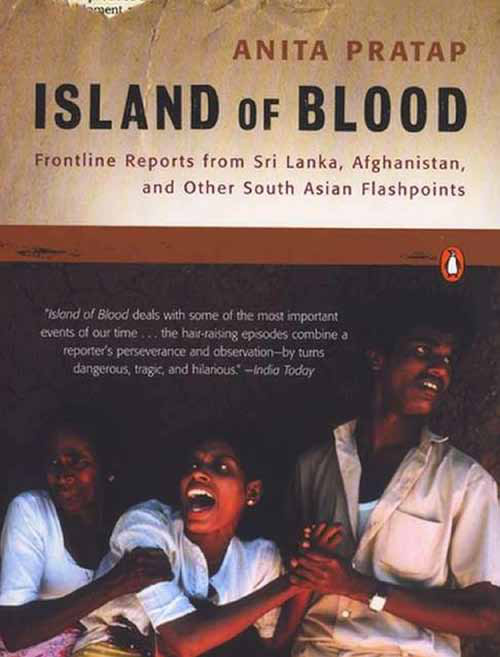

I f not for the bravery and persistence of Indian journalist Anita Prathap, the Sri Lankan state might well have succeeded in burying the truth about Black July 1983. At a time when the government was determined to deny that any pogrom had taken place—and when the state machinery worked overtime to suppress every whisper of anti-Tamil violence—it was Anita Prathap who broke the silence on the international stage. Defying the odds, she travelled to Sri Lanka and became one of the first foreign journalists to document and report on the brutal massacre of Tamils.
I f not for the bravery and persistence of Indian journalist Anita Prathap, the Sri Lankan state might well have succeeded in burying the truth about Black July 1983. At a time when the government was determined to deny that any pogrom had taken place—and when the state machinery worked overtime to suppress every whisper of anti-Tamil violence—it was Anita Prathap who broke the silence on the international stage. Defying the odds, she travelled to Sri Lanka and became one of the first foreign journalists to document and report on the brutal massacre of Tamils.
Jaffna Monitor hellojaffnamonitor@gmail.com 13 I f not for the bravery and persistence of Indian journalist Anita Prathap, the Sri Lankan state might well have succeeded in burying the truth about Black July 1983. At a time when the government was determined to deny that any pogrom had taken place—and when the state machinery worked overtime to suppress every whisper of anti-Tamil violence—it was Anita Prathap who broke the silence on the international stage. Defying the odds, she travelled to Sri Lanka and became one of the first foreign journalists to document and report on the brutal massacre of Tamils. Her searing eyewitness accounts, along with the photographs she captured while stealthily risking her life with a Kodak Instamatic camera, directly challenged the state’s official narrative. Knowing that all journalistic material was being seized at the airport by Sri Lankan authorities, she smuggled the negatives out of the country with the help of a young couple and managed to get them to India. In doing so, she not only defied a state- led media blackout but also forced both India and the wider world to confront the truth. Her reporting helped internationalize the horror of the 1983 violence and spotlight the long- ignored plight of the Tamil people. Years later, in her acclaimed book Island of Blood, Anita reflected on that experience that changed everything: “Life for me has since been defined as before and after the 1983 riots.” In 1984, she achieved the unthinkable— persuading the elusive LTTE leader Velupillai Prabhakaran to sit down for his first-ever interview. Published in The Sunday magazine under the headline “If Jayewardene was a true Buddhist, I would not be carrying a gun,” the piece offered the world a rare glimpse into the mind and philosophy of the man who would go on to become the epicenter of the Tamil armed struggle. It was in this very interview that Prabhakaran delivered one of his most quoted declarations: “Nature is my friend. Life is my philosopher. History is my guide.” She was a trailblazer in every sense of the word. At a time when women in Asia were rarely seen anywhere near riot zones, conflict areas, or frontlines, Anita Prathap walked straight into the fire—armed only with a pen, a camera, and an unshakable commitment to telling the truth. By doing so, she redefined what it meant to be a woman in journalism. Her courage was contagious. Today, every bold young female journalist from South Asia— including India and Sri Lanka—chasing stories in the world’s most dangerous corners is undoubtedly walking a path she helped carve. This is Jaffna Monitor’s exclusive interview with her. You began your journalism career at a time when it was virtually unheard of for women in Asia to report on politics, riots, or war zones. You’ve mentioned that even your editors and male colleagues were initially taken aback by your determination to cover such stories. What was it like navigating the deeply male-dominated world of political and conflict journalism in those early years? It was tough, but not that tough. What I have learnt is that persistence breaks down resistance. Most people do things one way because that’s the way things have been done. So their resistance is due to many factors – women have not reported war, women don’t cover politics, etc., etc. There were, instances of male chauvinism, but equally, there were supportive men. Most of them were old- fashioned, not necessarily misogynistic. I don’t give up. I fail a lot, but because I don’t give up, I win eventually. Everybody remembers my victory; I remember all my failures.
Jaffna Monitor hellojaffnamonitor@gmail.com 14 You come from a remarkable family rooted in Kerala’s ancient Catholic community—your grandfather was a pioneering educator and legislator, your father the first in your community to earn an MBA from the U.S., and your upbringing spanned seven schools across eleven years. How did this intellectually rich, reform-driven, and peripatetic childhood shape your worldview? In what ways did your parents and early experiences influence your adaptability, curiosity, and your decision to pursue journalism on the frontlines of global conflict? My parents, grandparents, background, and childhood all shaped me to become who I am, but they did not make what I am- in terms of career. Yes, being in 7 schools in 11 years made me extremely adaptable, unafraid of new situations and new people. I am always excited to go to new places, meet new faces, taste new dishes, have new experiences, and try new gadgets. Newness opens up new frontiers, fresh ways of seeing, experiencing, understanding the world. How little we know! I see every day as a classroom of new ideas, thoughts, and experiences. Every night, when I go to bed, I think of all the new things I have learned during the day. I am learning more things now than I learnt when I was in my 20s. Learning new things every single day. That’s what gives me joy and satisfaction. I am curious by nature. As they say, curiosity is not a destination, it's a compass in life. Sri Lankan Tamils like me have a deep personal connection and enduring gratitude toward you for being one of the first to expose the 1983 anti-Tamil pogrom to the outside world. Without your courageous reporting, some say the full brutality of 'Black July' may have never reached global attention. You risked your own safety to stealthily photograph the carnage, and your eyewitness reports sparked an uproar in the Indian Parliament, ultimately playing a role in India’s decision to intervene in Sri Lanka. Looking back, how did that moment shape your career and the public’s understanding of the conflict? Did you foresee that your journalism would have such political consequences, and how did you cope with the emotional toll of documenting such horror firsthand? It was the turning point of my career, I would say—even life, even though I was totally unaware of it at that time. Everything that happened afterwards was defined by this. It was war of a kind we, Indians, had not seen since the Partition, and South India did not really bear witness to that. I reported in detail—no adjectives, just describing what I saw. It was hugely difficult for me—the dangers, the unfolding of an atrocity, the horrifying images and emotions unseen and unheard of in my world until then. It shocked everyone, it stabbed everyone’s conscience. It’s one thing covering a situation like this through press briefings and interviews with analysts, etc., totally different when you report it from hell as it unfolds. No one had covered a story of this tragic proportion in this manner. Perhaps even more significantly, no woman had reported from ground zero. It captured people’s imagination, it stirred the Tamil
Jaffna Monitor hellojaffnamonitor@gmail.com 15 media, and then suddenly I became part of the story. It shattered myths about women, broke glass ceilings. It was impactful in every way. Even today, no matter all the stories I have done—reporting from Siachen glacier or Taliban capture of Kabul—it is the Sri Lanka ethnic crisis, the interviews with Prabhakaran that is associated with me, most of all. As you mentioned, it is the interviews with Prabhakaran that remain most closely associated with you. At the time, nearly three dozen Sri Lankan Tamil militant groups were active, each fighting for Tamil Eelam on their own terms. Why did you identify the LTTE and its leader, Prabhakaran, as the frontrunner? Was there something distinctive about their strategy, leadership, or organizational structure that drew your attention? Yes, absolutely. As they say, a person is known by the company he/she keeps. A guerrilla organisation is known not just by the leader, but by its cadre. The LTTE cadre was superior in every way — they were committed, hard- working, simple, unassuming, and spoke little. They were dedicated in a powerful way. The other groups had normal cadres; they were like us, ordinary people. When I saw how different the LTTE members were, I realised the leader must be of a different calibre if he raised this cadre. I met all the other leaders, but it was impossible to meet Prabhakaran. I was told Anita Prathap interviews LTTE leader Prabhakaran.

Jaffna Monitor hellojaffnamonitor@gmail.com 16 — he is fighting a war, he has no time for interviews. I liked the fact that he was not into self-promotion, and so I redoubled and tripled my efforts to meet him. With your redoubled and tripled efforts, you became the first journalist ever to interview the elusive Prabhakaran. Could you take us through how you managed to secure that interview? What convinced him to speak with you, and why do you think he placed his trust in you? How did that historic encounter unfold—and as someone who met Prabhakaran in person, how did he strike you? He finally agreed to meet me after the July riots. His reason was that the LTTE were guerrillas, so they had to go into the war zones. But I didn’t have to, I was only a journalist. But that I chose to risk my life for the story impressed him, about my so-called courage and dedication. He said he was grateful that I had “internationalised” the Tamil conflict and brought attention to it, that I did so by highlighting Tamil suffering. He wanted to meet me to personally express his gratitude. After my articles, there was no longer he-said-she-said type of reporting. The onslaught against Tamils was evident. JR told me a few years later that G. Parthasarathy, India’s envoy to Sri Lanka, quoted incidents from my report during their meeting to highlight that India cannot remain silent against such atrocities. The Indian side told me JR started the meeting denying any anti- Tamil pogrom, but kept quiet after a while when these specific incidents were pointed out. When I first met him, my impression of Prabhakaran was that he was unimpressive. By the end of the interview, I felt he lived up to the impression I had of him before I met him – his commitment shone through like headlamps in a dark forest. The LTTE has often been described as a highly disciplined and tightly organized movement. Based on your firsthand observations, what aspects of its internal structure, command hierarchy, or operational discipline left a lasting impression on you—or perhaps even evoked a sense of awe? I was always impressed by their dedication. I have never seen anything like it. We can’t get a carpenter to fix a table properly—here was Prabhakaran raising a cadre willing to sacrifice Prabhakaran’s first-ever interview, given to Anita Prathap in 1984 for Sunday magazine.

Jaffna Monitor hellojaffnamonitor@gmail.com 17 their lives for him and for the cause. There was no flash or boastfulness, no body language that suggested they were on a grand mission. Their simplicity was striking. They were soft-spoken and neatly dressed, but in simple clothes and chappals. They never carried a gun. Their unwavering devotion to Prabhakaran was the secret glue that kept the LTTE so tightly knit. It was also the most security-conscious, secretive group I have ever encountered. In your conversations with Prabhakaran, was there anything he shared off the record-or conveyed between the lines-that the world never got to see or hear? Now that it's been over 16 years since his death, would you feel comfortable sharing any of those insights, if they are still relevant or revealing? No, when I met him, I told him upfront that whatever he said would be reported. I taped our entire conversation. He knows better than to share a secret with a journalist. He never spoke ill of anyone. I remember J. N. Dixit and Ranjan Wijeratne would say terrible things about Prabhakaran. Ranjan Wijeratne would tell me – ‘Next time you come to Colombo, Prabhakaran will be a dead man.’ Next time I came, Wijeratne was dead, killed by an LTTE suicide bomber. Prabhakaran never made threats. He just executed them. I knew Gamini Dissanayake well. He was an amazing raconteur. He would regale me with Colombo 7 gossip. Once I told him Prabhakaran likes Chinese food, because invariably after our interviews, Chinese fried rice, etc., would be served. Even in wanni jungle! On my next trip to Colombo, every single person I met—from the President to people on the street—knew that Prabhakaran liked Chinese food. Of course, I had mentioned this in my story months earlier, but there was hardly a ripple. In Colombo, nothing could match the Gamini Broadcasting Corporation. You once described Prabhakaran as the man you met with the greatest Anita Prathap with Indian Army officers in Siachen

Jaffna Monitor hellojaffnamonitor@gmail.com 18 sense of foresight. In hindsight, do you still stand by that assessment— especially considering the decisions he made during the final stages of the war, which ultimately led to the LTTE’s military collapse and a devastating humanitarian tragedy? Yes, I still believe he had tremendous foresight. At the height of India’s support to the LTTE in the ’80s, he told me one day he would have to fight India. It shocked me. And that day came in 1987. He said the Indian, international role will determine the fate of Tamil Eelam. He was very clear-eyed that he and his family may die fighting for Eelam. Many tried to intervene, urging him to come to some sort of settlement. Nothing worked. Why do you think he consistently refused to accept a negotiated settlement, even in the final years of the war? Was it driven by ego, unwavering conviction, strategic miscalculation, or something deeper within his worldview? There were many opportunities for a negotiated settlement. In 1990, after the IPKF left, Premadasa literally gave him the Northeast on a platter. I thought this was as good as it gets— take it and build on it. His answer was, ‘I don’t want their Eelam, I want our Eelam.’ There was ego, there was stubbornness, a steadfast purity of intent that is virtually unachievable, unrealistic in real life, and also a sense of misplaced loyalty. When I asked him why he can’t settle for something less than Eelam, his reply was, ‘So many of my cadres have died for Eelam. If I settle for something less, they would have died in vain.’ As I wrote in my book, Island of Blood, he didn’t seem The cover of Anita Prathap’s much-acclaimed book Island of Blood.

Jaffna Monitor hellojaffnamonitor@gmail.com 19 to see the conundrum—by not settling for something less than Eelam, he was sending more of his cadres to death. In your landmark interview with Prabhakaran, he famously said, “Nature is my friend, life is my philosopher, and history is my guide”—a line you once remarked struck you more deeply than anything you'd heard from a prime minister or president. But looking back, did he truly live by those words? He claimed nature was his friend, yet in the final stages of the war, he chose to entrench himself in flat, exposed terrain surrounded by sea and lagoon, effectively cutting off escape and ensuring encirclement. He said life was his philosopher, yet he rejected every opportunity for a negotiated political settlement, dragging his people into an unwinnable war. And he called history his guide, yet he ignored its clearest lessons— refusing to return to guerrilla tactics and instead opting for conventional warfare against a far superior army. In hindsight, do you believe these choices reflect a betrayal of his own ideals? Or was he, by that point, blinded by conviction—or perhaps delusion? I think that statement of his was bingo as long as he was a guerrilla fighter. And I think, at an individual level, it is true for most of us – nature as friend, history as guide …. I analysed his guerrilla actions in light of his quote, and I found it was absolutely true of his style. He used terrain to deadly effect, he was philosophical also in the way he spoke about larger concepts than something pertaining to him or the LTTE, and he had a deep understanding of history. We all evolve in life. At 50, we are not what we were at 20. Prabhakaran evolved too—but that’s where I think he took a wrong turn. I wrote about this in the early 1990s. The IPKF’s departure was a big boost—he had kicked out the world’s third-largest army. Of course, Premadasa played a bigger role, but that’s not how Prabhakaran chose to see it. In his mind, the LTTE had evolved from a guerrilla force to a conventional army. This was a fatal turn. So many LTTE boys and girls got killed in the Elephant Pass battle that followed, where he fought a conventional battle. He couldn’t scale down, and eventually went down fighting. What role did women play within the LTTE—both symbolically and strategically? Do you believe they were genuinely empowered within the movement, or were they, to some extent, instrumentalized in the name of revolution? While women held leadership roles within all-female units, it’s notable that no woman was ever appointed to command a mixed- gender fighting force. How would you assess the LTTE’s approach to gender, empowerment, and leadership? It was a male-oriented organisation, no question about it. Women came later to supplement fighting men. There were plenty of
Jaffna Monitor hellojaffnamonitor@gmail.com 20 way? At times, some critics perceived your work as being sympathetic to the LTTE. How did you navigate such criticisms while upholding your journalistic integrity and credibility in such a charged and complex environment? I never faced any pressure from the Indian government, LTTE, or Sri Lankan government. I was probably the only one who had top access to all three groups. The reason they gave me access was that I never misreported either what they said or the facts on the ground. In a slight twist from the Bhagavad Gita, my way has always been: do your duty—never mind praise or criticism. Stay steady on the ground, not allowing praise to take you high or criticism to take you low. I wrote what Prabhakaran said because I had access to him, not because I was pro-him. Those who hated him felt I shouldn’t be reporting him. I see why they feel that way, but I have a job women fighters—maimed, dead. They, too, were leading on the battlefront. I have met the leader of the women’s cadre. In their behaviour, there is no difference between the men and women cadres. Dedicated—men and women of few words, mindful of their duties. Given the highly polarized nature of the Sri Lankan conflict, did you ever face pressure—whether from the LTTE, the Indian government, or editorial leadership—to frame your reporting in a particular

Jaffna Monitor hellojaffnamonitor@gmail.com 21 to do as a journalist. I have not spared the LTTE from my criticism, but Prabhakaran continued to meet me—because he and Indian or Sri Lankan ministers knew I had no personal agenda, no malice. I was ethical, professional, trying to understand—not pass judgments. Situations happen, history unfolds… whether we like it or not. As a journalist, I saw my role as understanding the situation in its entirety— not just one point of view, however right it may be, or excluding another point of view, no matter how wrong it may be. Even illogic has its own, often self-defeating, logic. It may not be the winning or losing side, but it is part of the complex web that life is. Actually, while I covered all the protagonists in this conflict, my number one priority was always the public. As much as I took JR, Rajiv Gandhi, Prabhakaran’s points of view, I always sought the ordinary person’s point of view. The most dangerous situations I have been in were not journeys to interview Prabhakaran, but when I was trying to talk to civilians. I guess this is also the reason my reports were different. In your view, what were the key miscalculations or structural flaws that led to the LTTE’s downfall and the tragedy of Mullivaikkal? Firsthand accounts and UN reports have documented how, in its final years, the LTTE resorted to practices such as child abductions and targeting civilians attempting to flee. How do you explain this moral and strategic transformation—from a movement that took up arms to protect its people, to one that ultimately turned its guns on them? Looking back, did you observe any early signs or tendencies toward this kind of brutality when you first encountered the LTTE in the 1980s? The LTTE always had a brutal side to them. How can we forget the lamppost killings, the executions? Prabhakaran had zero tolerance for those whom he considered ‘traitors’—it was punishment, lesson, and deterrence to keep the cause a watertight ship. It’s okay that he wants to lay down his life for the cause, but to demand that of the public is not just unrealistic—it’s bizarre. A characteristic of all strongmen is that they never groom a successor. There is no second line of defence when it comes to leadership. So the organisation—or state—goes crashing down with them. The LTTE was a liberation movement but it was also a cult revolving around Prabhakaran. When he goes, so does the group—though the ideology lingers. I don’t understand the end. There are no secrets in life. Eventually, the full truth will come out. During the final days of the war in Mullaitivu, trusted intermediaries were reportedly approached by some LTTE commanders seeking surrender. Were you contacted by anyone within the LTTE at that time? No Several independent investigations and reports—including the UN Panel of Experts (2011), the OHCHR Investigation on Sri Lanka (OISL,
Jaffna Monitor hellojaffnamonitor@gmail.com 22 2015), and credible testimonies from survivors—have documented grave allegations of war crimes committed by the Sri Lankan military during the final stages of the war. These include indiscriminate shelling in designated No Fire Zones, targeting of hospitals, summary executions, and sexual violence against detainees. What is your assessment of the Sri Lankan military’s conduct during the last phase of the war? Militaries do what militaries do. They bomb, shoot, kill. They have one goal—destroy the enemy and his infrastructure. In that mission, they care two hoots for hurdles, concerns, good practices. We see what is going on in Gaza today. The UN is a toothless body. They do the best they can—there are brave men and women in the UN—but in the end, it is the brute state power of the P5 and local governments that matter. Prabhakaran’s story should be a lesson for all – Tamils and Sinhalese – that military means cannot achieve peace. States can use catastrophic means to achieve traumatic peace. What politicians on both sides must realize is that just peace brings huge dividends. Europe is a great example. It was in ruins after World War II. By avoiding war and pursuing peace and prosperity, it has become the admired “lifestyle superpower” of the world. If the Sinhalese politicians pursue a zero-sum game, everybody will lose. Life is all about the possibilities of abundance, but you must choose to see it that way. In my childhood, shops in India had few items. It amazes me to see abundance today. Sinhalese politicians don’t have to deprive the Tamils of their rights to grab a slice of the economic pie. If Tamils are treated fairly, what happens inevitably is that Tamils and Sinhalese together will bake an economic pie of abundance—and everybody gets a bigger slice. This is common sense, but also proven by historical experience. Sixteen years after the end of the war, many of the core grievances of the Tamil people remain unaddressed. The Prevention of Terrorism Act (PTA)—widely condemned by international human rights organizations for enabling arbitrary detention and torture—is still in force, despite repeated pledges to repeal or reform it. Likewise, vast areas of civilian land, particularly in the North and East, remain under military occupation, with over 60,000 acres still held by security forces, according to civil society monitors. Now, with the Tamil people having overwhelmingly supported the NPP in Parliament—placing their faith in a new political alternative—do you believe this government has both the will and the capacity to meaningfully address these long-standing issues of demilitarization, justice, and dignity? I am skeptical because too many past promises have been broken, too many opportunities missed. Democracy is great when it brings in sweeping, much-needed
Jaffna Monitor hellojaffnamonitor@gmail.com 23 changes, but not so good when politicians feel they have to mobilize their base to win. Then jingoism, prejudice, and bigotry come into play. The problem is that, in most cases, personalities cannot bring change because injustice, discrimination, and exploitation are baked into the system. Despite India’s historic involvement, do you believe New Delhi is still committed to securing a political solution for Sri Lankan Tamils? PM Modi’s recent visit prioritized strategic and economic issues but remained silent on Tamil aspirations. Has India deprioritized the Tamil issue in favor of broader geopolitical interests? It would seem that way. Other than those days in 1983, North India was not so exercised about Sri Lanka. The strong pro–Sri Lankan Tamil feelings also dissipated in Tamil Nadu. The mantra of the current era is deals, not ideals. It’s all about expanding markets, achieving growth. The world is busy—and wants to get busier—making money. This may not be such a bad thing. Sometimes emotions make solutions harder to solve. Economic prosperity often allows the problem to recede. We see how Japan and Germany prospered out of trauma. India has taught me that you can’t always solve problems, but you try to manage them. Economic growth, provides time, space and opportunities to do that. I guess one must think positive. Finally, looking at Sri Lanka today, do you see any realistic path forward— either internally or with international support—for achieving justice, autonomy, or reconciliation for the Tamil people? I think young Tamils in Sri Lanka, around the world, have a proud or nostalgic notion of their homeland. This is natural and good, as long as it is patriotic and not nationalistic. There is an important difference. The current phase of the Tamil struggle is not LTTE 2.0. It is young men and women, in Sri Lanka and the diaspora, who fight for justice in the modern way. They document, collect facts, data, accounts, stories, connect, disseminate, lobby, and try to get institutional redressal. They are doing that. They struggle in their own way to fulfil what matters to them, with means of their choice and competence, not with gun, but with words, paintbrushes, laptops, camera, mobile phone, contacts list, affidavits. Deals are won or lost, but ideals are universal; they may not always find a public arena, but they live in our hearts. Just because victory is not in sight doesn’t mean you give up the struggle. In story after story that I have reported, I have seen that injustice is harder to bear than poverty. To be human is to struggle for what is just–for us, for those around us, for those who came before us, and for those who will arrive long after we are gone. Note: Anita Prathap’s much-acclaimed and best-selling book Island of Blood, published by Penguin, is available on Amazon.com and Amazon.in.